[11차시] 2050년 기온예측 / 강수량 시각화
1. 기온데이터로 서울의 평균기온 예측
1.1. scikit-learn(사이킷런: sklearn) 불러오기
- scikit-learn(sklearn)은 파이썬을 대표하는 머신러닝 라이브러리
- 데이터 전처리, 모델 학습, 평가, 파이프라인 구축 등 데이터 분석 및 예측 모델링 전 과정 지원함.

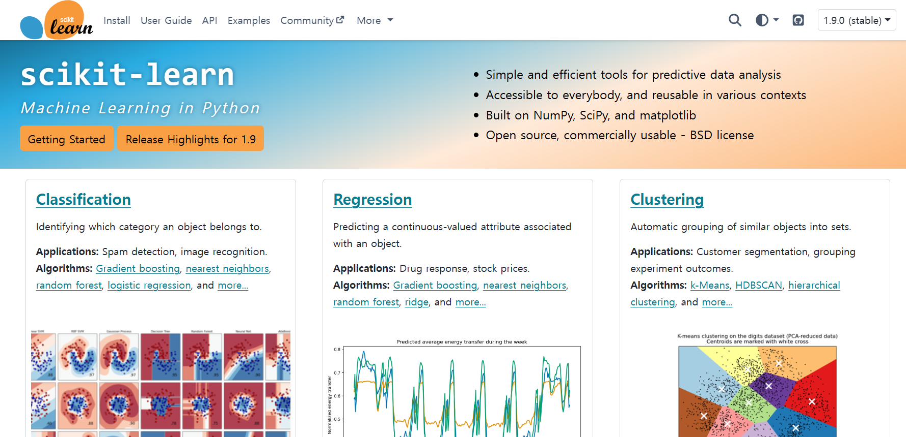
| 구분 | 주요 내용 |
|---|---|
| 어원 | • SciPy Toolkits (Scikits): 파이썬 수치 계산 패키지 SciPy의 확장 라이브러리 • learn: 머신러닝(Machine Learning) 전용 패키지 |
| 역사 | • 2007년: 다비드 다비드 쿠르나포(David Cournapeau)가 구글 서머 오브 코드(GSoC) 프로젝트로 개발 • 2010년: 프랑스 국립디지털과학기술연구소(INRIA)에서 첫 공식 버전 공개 • 파편화된 머신러닝 알고리즘 코드를 일관된 인터페이스로 통합하여 생태계 표준화 주도 |
| 특징 | • 일관된 API 구조: 모든 모델이 fit(), predict(), transform() 메서드 패턴 공유• 생태계 호환성: NumPy 배열, Pandas DataFrame, SciPy 와 완벽한 연동 |
| 항목 | 내용 |
|---|---|
| 이름 | 다비드 쿠르나포 (David Cournapeau) |
| 국적 | 프랑스 |
| 직업 | 데이터 과학자, 머신러닝 엔지니어, 엔지니어링 매니저 |
| 업적 | • 파이썬 대표 머신러닝 라이브러리 scikit-learn 최초 개발 (2007년) • NumPy 및 SciPy 핵심 기여자(Core Contributor) |
| 학력 | • 프랑스 텔레콤 파리테크 전기공학 석사 • 일본 교토 대학 컴퓨터과학 박사 (음성 인식 전공) |
| 현재 | Amazon 응용과학 엔지니어링 매니저 |

| 구분 | NumPy | Pandas | scikit-learn (sklearn) |
|---|---|---|---|
| 주요 역할 | 수치 계산 다차원 배열 연산 | 구조화된 데이터 전처리 | 머신러닝 알고리즘 데이터 예측·평가 |
| 핵심 구조 | ndarray (다차원) | DataFrame (2차원), Series (1차원) | NumPy, Pandas 호환 |
| 주요 특징 | 수치 연산에 최적화 빠른 연산 속도 | 행(열) 라벨링 지원 서로 다른 자료형 혼용 가능 | 회귀, 분류, 군집화 모델 평가, 교차검증 |
| 제공 기능 | 행렬 연산, 통계 함수 | 데이터 변환, 결측치 처리 | fit(), predict(), transform() |
| 사용 시점 | 대규모 수치 데이터 처리 | 엑셀 형태의 데이터 분석 | 머신러닝 모델 |
| 모듈명 | 주요 기능 및 역할 | 핵심 클래스 및 함수 |
|---|---|---|
preprocessing | 데이터 전처리, 스케일링, 인코딩 | StandardScaler, MinMaxScaler, OneHotEncoder, LabelEncoder |
model_selection | 데이터 분할, 교차 검증, 튜닝 | train_test_split, KFold, GridSearchCV, RandomizedSearchCV |
linear_model | 선형 기반 회귀, 분류 | LinearRegression, Ridge, Lasso, LogisticRegression |
tree | 의사결정트리 기반 분류, 회귀 | DecisionTreeClassifier, DecisionTreeRegressor, export_graphviz |
ensemble | 앙상블 학습 | RandomForestClassifier, GradientBoostingClassifier, VotingClassifier |
cluster | 비지도 기반 군집화 | KMeans, DBSCAN, AgglomerativeClustering |
decomposition | 차원 축소 및 특성 추출 | PCA, TruncatedSVD, NMF |
metrics | 모델 성능 평가 | accuracy_score, confusion_matrix, roc_auc_score, mean_squared_error |
pipeline | 단일 파이프라인 | Pipeline, make_pipeline |
| 모듈명 | 핵심 클래스/함수 | 쉬운 설명 및 활용 목적 |
|---|---|---|
preprocessing(데이터 전처리) | StandardScaler | 평균을 0, 표준편차를 1로 맞추어 데이터를 표준정규분포 형태로 스케일링 |
MinMaxScaler | 모든 데이터 값을 0과 1 사이의 범위로 변환하여 스케일 조정 | |
OneHotEncoder | 범주형 데이터(예: 과일명, 지역명)를 0과 1(One-Hot)로 변환 | |
LabelEncoder | 범주형 데이터의 각 클래스를 0, 1, 2... 와 같은 정수 숫자로 변환 | |
model_selection(데이터 분할/튜닝) | train_test_split | 전체 데이터를 학습용(Train)과 평가용(Test) 데이터셋으로 손쉽게 나누는 함수 |
KFold | 데이터를 K개의 조각으로 나누어 교차 검증(Cross Validation)을 수행하도록 분할 | |
GridSearchCV | 하이퍼파라미터 후보 조합을 모두 탐색해 최적의 모델 매개변수를 찾음 | |
RandomizedSearchCV | 무작위로 샘플링하여 빠르게 최적 파라미터를 탐색 | |
linear_model(선형 기반 모델) | LinearRegression | 기본 선형 회귀 알고리즘으로 수치형 데이터를 예측하는 기본 모델 |
Ridge | L2 규제를 추가하여 과적합을 방지하는 선형 회귀 모델 | |
Lasso | L1 규제를 추가하여 불필요한 특성의 가중치를 0으로 만들어 과적합을 방지하는 회귀 모델 | |
LogisticRegression | 선형 회귀에 시그모이드 함수를 적용한 예측하는 분류 모델 | |
tree(의사결정트리) | DecisionTreeClassifier | 나무(Tree) 구조의 조건문 스무고개 방식으로 데이터를 분류하는 모델 |
DecisionTreeRegressor | 나무 구조 조건문을 바탕으로 연속된 수치형 결과값을 예측하는 회귀 모델 | |
export_graphviz | 학습된 의사결정나무 모델을 시각화할 수 있는 Graphviz 형식(텍스트로 관계 설명) | |
ensemble(앙상블 학습) | RandomForestClassifier | 수많은 의사결정나무를 만들고 다수결 투표 방식으로 예측력을 높인 대표적 앙상블 모델 |
GradientBoostingClassifier | 이전에 만든 나무의 오차를 다음 나무가 보완해 나가는 부스팅(Boosting) 방식 분류 모델 | |
VotingClassifier | 서로 다른 여러 개 알고리즘 모델의 예측 결과를 투표(Voting)를 통해 최종 결합 | |
cluster(비지도 군집화) | KMeans | K개의 중심점을 기준으로 가까운 거리끼리 묶어주는 가장 대표적인 군집화 알고리즘 |
DBSCAN | 밀도(Density) 기반으로 기하학적 형태의 군집을 찾고 노이즈(이상치)를 구분 | |
AgglomerativeClustering | 가까운 것끼리 계층적으로 차근차근 묶어 나가는 상향식 군집화 | |
decomposition(차원 축소) | PCA | 고차원 데이터를 저차원으로 축소 |
TruncatedSVD | 단일값 분해 방식의 차원 축소 모델 | |
NMF | 텍스트, 이미지를 음수 미포함 자원으로 분해하는 차원 축소 기법 | |
metrics(모델 성능 평가) | accuracy_score | 정확도를 계산하는 함수 |
confusion_matrix | 혼동 행렬로 표기해 주는 함수 | |
roc_auc_score | ROC 곡선 아래 면적(AUC) 점수를 산출해 주는 평가 함수 | |
mean_squared_error | 오차 제곱 평균(MSE)을 구하는 평가 함수 | |
pipeline(파이프라인) | Pipeline | 전처리 단계와 모델 학습 단계를 하나로 연결해 묶어주는 클래스 |
make_pipeline | 파이프라인 생성해 주는 함수 |
코드 입력_01
!pip install koreanize-matplotlib
import numpy as np
import pandas as pd
import matplotlib.pyplot as plt
import seaborn as sns
import koreanize_matplotlib
# 선형회귀 알고리즘 사용하기
from sklearn.linear_model import LinearRegression
# 학습 데이터와 테스트 데이터 분리하기
from sklearn.model_selection import train_test_split
# 회귀모델 성능 평가
from sklearn.metrics import mean_squared_error, r2_score1.2. 기온 데이터(seoul_temp_year.csv): 샘플 5개 출력
- encoding=’euc-kr’ 또는 ‘cp949’ 또는 ‘UTF-8’로 인코딩 설정하지 않으면 한글 코드가 깨짐.
- df라는 이름의 데이터프레임에 저장한 후 출력하기
코드 입력_02


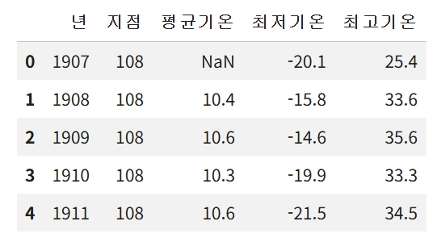
1.3. 데이터 프레임의 정보 확인하기
코드 입력_03


1.4. 결측치 데이터를 값으로 채워 샘플 5개 출력
1.4.1. 결측치 dropna 함수로 처리
- dropna함수로 결측치가 포함된 행 삭제하기 ex) df = df.dropna()
- 결측치 데이터를 다음 값으로 채우기 ex) df = df.fillna(method='bfill')
- 결측치 데이터를 이전 값으로 채우기 ex) df = df.fillna(method='ffill')
- 결측치 데이터를 임의의 값(0)으로 대체하기 ex) df['평균기온'].fillna(0,inplace=True)
- 결측치 데이터를 평균값으로 대체하기 ex) df['평균기온'].fillna(df['평균기온'].mean( ),inplace=True)
코드 입력_04

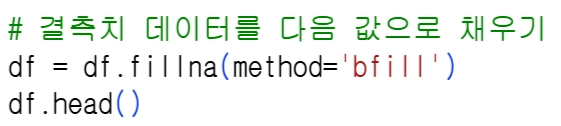

코드 입력_05

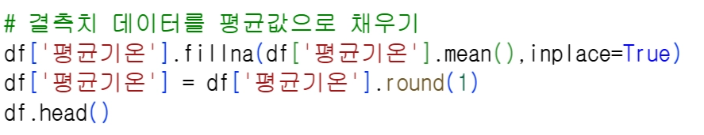

1.5. seaborn의 lineplot 함수로 시각화
코드 입력_05
plt.figure(figsize=(20, 3), dpi=300)
sns.lineplot(data=df, x='년', y='최저기온', color='blue', label = '최저기온')
sns.lineplot(data=df, x='년', y='최고기온', color='red', label = '최고기온')
sns.lineplot(data=df, x='년', y='평균기온', color='green', label = '평균기온')
plt.title('선그래프로 나타낸 서울의 기온 분포')
plt.legend()
1.6. seaborn의 regplot 함수: 데이터간 상관관계를 시각화하기
코드 입력_06
fig, axs = plt.subplots(figsize=(16, 8), nrows=2, ncols=2)
# 1행 1열 (왼쪽 위): 지점
sns.regplot(data=df, x='지점', y='년', ax=axs[0][0])
# 1행 2열 (오른쪽 위): 평균기온
sns.regplot(data=df, x='평균기온', y='년', ax=axs[0][1])
# 2행 1열 (왼쪽 아래): 최저기온
sns.regplot(data=df, x='최저기온', y='년', ax=axs[1][0])
# 2행 2열 (오른쪽 아래): 최고기온
sns.regplot(data=df, x='최고기온', y='년', ax=axs[1][1])
plt.tight_layout() # 그래프 간격 정리
| 구분 | 왼쪽 (열 = 0) | 오른쪽 (열 = 1) |
|---|---|---|
| 위쪽 (행 = 0) | axs[0][0] (1행 1열) | axs[0][1] (1행 2열) |
| 아래쪽 (행 = 1) | axs[1][0] (2행 1열) | axs[1][1] (2행 2열) |
코드 입력_07


1.7. drop( ) 함수
- drop( )의 axis=0은 행(row), axis=1은 열(column)을 삭제한다는 의미임.
inplace=False(기본값) : 사본을 만들어 수정하기
inplace=True: ‘원본 서류에 직접 화이트로 지우기’
코드 입력_08

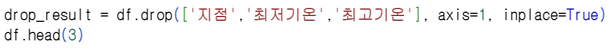

1.8. 피처(훈련) 데이터와 레이블(정답) 데이터 분리하기
코드 입력_09


코드 입력_10


1.9. 학습 데이터와 테스트 데이터 분리하기
1.9.1. train_test_split
- test_size=0.2: 학습 데이터: 80%, 테스트 데이터: 20%
- X_train: 학습용 피처 데이터, X_test: 테스트용 피처 데이터
- y_train: 학습용 결정값, y_test: 테스트용 결정값
- random_state=156: 무작위로 데이터를 분리하므로 수행결과가 항상 일치하기 위한 난수
코드 입력_11
X_train, X_test, y_train, y_test = train_test_split(temp_feature, temp_label, test_size = 0.2, random_state = 156)1.10. 학습용 피처 데이터 샘플 5개 출력하기
코드 입력_12


1.11. 학습용 결정값 데이터 샘플 5개를 출력하기
코드 입력_13


1.12. 선형 회귀(LinearRegression)
코드 입력_14

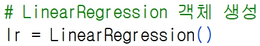
1.13. fit 함수
- 학습용 피처 데이터와 학습용 결정값을 가지고 학습 수행하기
코드 입력_15


1.14. predict 함수
- 학습이 완료된 테스트용 피처 데이터로 예측을 수행 후 예측 결과를 반환함.
- predict(테스트용 피처 데이터(2차원))
코드 입력_16

1.15. MSE, RMSE, score
코드 입력_17
mse = mean_squared_error(y_test, pred)
rmse = np.sqrt(mse)
r2 = r2_score(y_test, pred)
print(f'MSE : {mse:.3f} , RMSE : {rmse:.3f}, r2_score : {r2:.3f}')MSE : 0.356 , RMSE : 0.596, r2_score : 0.583
1.16. predict함수로 미래 예측
- 2050년도까지 평균기온 예측하기
코드 입력_18


1.16.1. 그래프 그리기
코드 입력_19


1.16.2. 학습, 테스트 데이터로 그래프로 그리기
코드 입력_20


1.16.3. 추세선 그리기
코드 입력_21


1.16.4. 2050년까지 서울의 평균기온 ‘확장 예측’
코드 입력_22
# np.arange(1907, 2051)의 연도 데이터
new_X = np.arange(1907, 2051)
# 1차원 ndarray를 2차원 DataFrame으로 변환
col_name=['년']
new_X = pd.DataFrame(new_X, columns=col_name)
# 예측수행 후 그래프로 그리기
new_Y = lr.predict(new_X)
plt.plot(temp_feature, temp_label)
plt.plot(new_X,new_Y)
plt.show()
1.16.5. 마지막 20개 선형 회귀 모델이 예측한 평균기온을 숫자로 출력하기
코드 입력_23

array([13.28402211, 13.30852394, 13.33302576, 13.35752759, 13.38202942,
13.40653124, 13.43103307, 13.4555349 , 13.48003672, 13.50453855,
13.52904037, 13.5535422 , 13.57804403, 13.60254585, 13.62704768,
13.6515495 , 13.67605133, 13.70055316, 13.72505498, 13.74955681])1.16.6. 기울기와 절편 출력
- 기울기: 1개, 절편: 1개
- 회귀 계수: np.round 함수를 이용하여 소수 셋째자리까지 반올림해서 표현
코드 입력_24

[0.025] -35.479
1.16.7. 예측(Predict) 수행하기
코드 입력_25


[추가 과제-선택적 활동] 본인의 학번에 해당하는 과제를 추가로 해결하고 코랩에 담아서 제출하시오.
코드 입력_26
| 학번 | 문제 유형 | 추가 실습 과제 | 예상 실행 코드 |
|---|---|---|---|
| 01 | 시각화 | lineplot에서 최고기온 선의 색상을 빨강(red)에서 주황(orange)으로 변경하고 선 두께(linewidth=2) 설정하기 | sns.lineplot(..., color='orange', linewidth=2) |
| 02 | 시각화 | regplot 서브플롯에서 최저기온과 년의 관계 그래프 위치를 1행 1열(ax=axs[0][0])로 변경해 그리기 | sns.regplot(data=df, x='최저기온', y='년', ax=axs[0][0]) |
| 03 | 전처리 | drop() 함수를 사용해 지점 열만 삭제하고 나머지 기온 데이터 유지하기 | df.drop(['지점'], axis=1, inplace=True) |
| 04 | 데이터분할 | train_test_split의 테스트 데이터 비율(test_size)을 0.2에서 0.3으로 변경해 학습 세트 크기 확인하기 | train_test_split(..., test_size=0.3, random_state=156) |
| 05 | 데이터확인 | 학습용 피처 데이터(X_train) 샘플을 5개가 아닌 10개 출력하여 인덱스 확인하기 | X_train.head(10) |
| 06 | 평가지표 | 평가 지표 출력 시 MSE와 RMSE의 소수점 표현을 3자리에서 4자리로 변경하여 출력하기 | print('MSE : {0:.4f}, RMSE : {1:.4f}'.format(mse, rmse)) |
| 07 | 미래예측 | 미래 기온 확장 예측 시 2050년이 아닌 2060년까지의 연도 범위(np.arange) 생성 후 예측하기 | new_X = np.arange(1907, 2061) |
| 08 | 슬라이싱 | 확장 예측 데이터(new_Y)에서 마지막 10개(2041~2050년)의 예측 기온만 슬라이싱하여 출력하기 | new_Y[-10:] |
| 09 | 수식계산 | 회귀계수와 절편을 이용해 2030년의 서울 평균기온 예측 방정식 수식을 직접 코드로 작성하여 계산하기 | 0.025 * 2030 - 35.479 |
| 10 | 코드구현 | 사용자 입력을 받아 특정 연도의 기온을 출력하는 코드에서 round() 반올림 자릿수를 1자리에서 2자리로 변경하기 | print(round(new_Y[answer], 2)) |
| 11 | 옵션변경 | train_test_split의 무작위 시드값(random_state)을 156에서 42로 변경 후 점수 변화 확인하기 | train_test_split(..., test_size=0.2, random_state=42) |
| 12 | 시각화 | 학습/테스트 데이터 그래프에서 테스트 데이터 점의 색상을 노랑 대신 빨간색(color='red')으로 변경하기 | plt.scatter(X_test, y_test, color='red') |
| 13 | 데이터해석 | 회귀계수 출력 코드에서 np.round 반올림 자릿수를 소수점 3자리에서 4자리로 변경하여 정확도 높이기 | np.round(lr.coef_, 4) |
| 14 | 시각화 | 전체 기온 추세 그래프 그리기 시 가로/세로 크기(figsize)를 (10, 5)로 설정하여 그래프 비율 조정하기 | plt.figure(figsize=(10, 5)) |
| 15 | 미래예측 | 2050년 대신 2100년까지의 기온 변화 추세선을 확장 예측하여 선 그래프로 나타내기 | new_X = np.arange(1907, 2101) |
2. 부산의 강수량 시각화
2.1. 기본 설정
!pip install koreanize-matplotlib
import numpy as np
import pandas as pd
import matplotlib.pyplot as plt
import seaborn as sns
import koreanize_matplotlib
2.2. 부산의 강수량 샘플 출력
코드입력_01


2.3. 데이터 프레임의 요약 정보
코드입력_02


2.4. 결측치를 0으로 채우기
코드입력_03

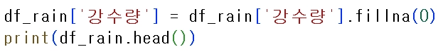

2.5. 날짜를 년, 월, 일로 분리하기
코드입력_04

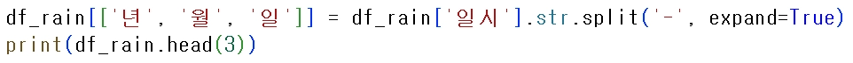

2.6. 필요없는 날짜, 지점의 컬럼 제거
코드입력_05


2.7. barplot 함수로 시각화
코드입력_06
#'년'컬럼을 정수형으로 변환함. (NaN 값은 fillna 후 변환)
# pd.to_numeric: 열의 데이터를 숫자(숫자형)로 변환함.
# errors='coerce'(강제하다): 바꿀 수 없는 결측치는 결측값(NaN)으로 강제 처리함.
# fillna(0): 생성된 NaN(결측값)을 숫자 0으로 채움.
# astype(int): 모든 데이터를 정수형(int) 타입으로 변환함.
df_rain['년']=pd.to_numeric(df_rain['년'],errors='coerce').fillna(0).astype(int)
df_2001 = df_rain[df_rain['년'] >= 2001]
plt.figure(figsize=(20, 5))
# ax는 Axes(축,차트 약자)
# hue='년'(항목별로 다른 색상)
# palette='husl'(파스텔톤: Hu(Human-friendly) S(Saturation) l(Lightness)
# dodge=False(hue 지정시 막대들을 X축에 표시)
# errorbar='se'(오차 막대Error bar의 기준을 표준오차로 설정)
# legend=False(범례(Legend) 박스 숨김.)
ax = sns.barplot(
data=df_2001,
x='년',
y='강수량',
hue='년',
palette='husl',
dodge=False,
errorbar='se',
legend=False
)
# x축 값 90도 회전, xticks는 X축 + Tick marks(눈금)
plt.xticks(rotation=90)
plt.xlabel('년')
plt.ylabel('강수량')
plt.show()
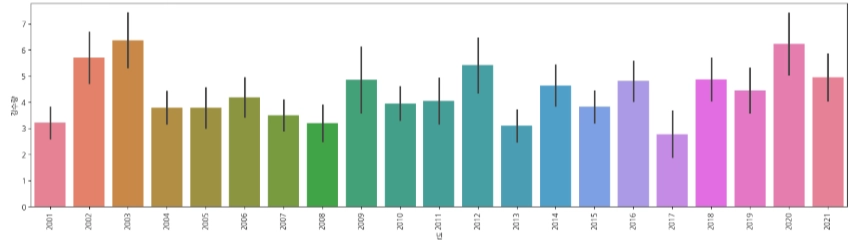
2.8. pointplot 함수로 시각화
코드입력_07


2.9. boxplot 함수로 시각화
코드입력_08
df_2018 = df_rain[df_rain['년'] >= 2018]
plt.figure(figsize=(20, 5))
ax = sns.boxplot(data=df_2018, x='년', y='강수량', hue='월', palette='husl')
# 범례를 그래프 우측 상단 바깥에 위치
plt.legend(bbox_to_anchor=(1, 1), loc='upper left')
plt.xlabel('년')
plt.ylabel('강수량')
plt.show()
2.10. swarmplot 함수로 시각화
코드입력_09
plt.figure(figsize=(20, 5))
ax = sns.swarmplot(
data=df_2018,
x='년',
y='강수량',
hue='월',
palette='husl',
s=2 # 점의 크기
)
plt.legend(title='월', loc='upper right')
plt.xlabel('년')
plt.ylabel('강수량')
plt.show()
2.11. distplot 함수로 시각화
코드입력_10


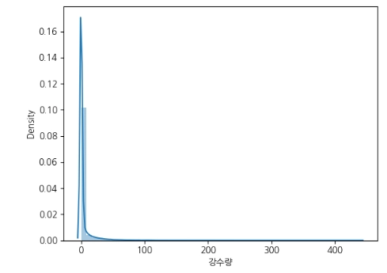
2.12. catplot 함수로 시각화
코드입력_11
df_2018 = df_rain[df_rain['년'] >= 2018]
# catplot 생성
# kind='bar': 막대그래프
# col='월': '월'별로 서브플롯 생성
# col_wrap=4: 한 줄에 4개의 서브플롯 배치
# height=4: 개별 서브플롯의 높이 설정
ax = sns.catplot(
data=df_2018,
x='년',
y='강수량',
col='월',
col_wrap=4,
kind='bar',
hue='년',
palette='tab10',
legend=False,
height=4
)
plt.show()
2.13. pointplot + violinplot 시각화
코드입력_12
df_2015 = df_rain[df_rain['년'] >= 2015]
plt.figure(figsize=(20, 5))
# violinplot 그리기
sns.violinplot(
data=df_2015,
x='년',
y='강수량',
hue='월',
palette='husl'
)
# pointplot 그리기
# 평균 지점을 선으로 이어 보여줌.
# dodge=True(월별 violin 위치와 point 위치가 일치함.)
ax = sns.pointplot(
data=df_2015,
x='년',
y='강수량',
hue='월',
palette='husl',
dodge=True
)
plt.legend(bbox_to_anchor=(1, 1), loc='upper left')
plt.xlabel('년')
plt.ylabel('강수량')
plt.show()
2.14. boxplot + stripplot 시각화
코드입력_13
df_2015 = df_rain[df_rain['년'] >= 2015]
plt.figure(figsize=(20, 5))
# boxplot 그리기
sns.boxplot(
data=df_2015,
x='년',
y='강수량',
hue='월',
palette='husl',
showfliers=False, # 중복 방지를 위해 박스플롯의 기본 이상치는 숨김.
dodge=True # 월별로 색상을 다르게 하기(dodge=True)
)
# stripplot 그리기
ax = sns.stripplot(
data=df_2015,
x='년',
y='강수량',
hue='월',
palette='husl',
dodge=True, # 박스 위치에 맞게 점을 배치
jitter=True, # 점들을 약간 흩뿌림
size=1, # 점 크기 조절
alpha=0.5, # 점의 투명도 조절 (이미지처럼 은은하게)
linewidth=0.5 # 점의 테두리 굵기
)
plt.legend(bbox_to_anchor=(1, 1), loc='upper left')
plt.xlabel('년')
plt.ylabel('강수량')
plt.show()
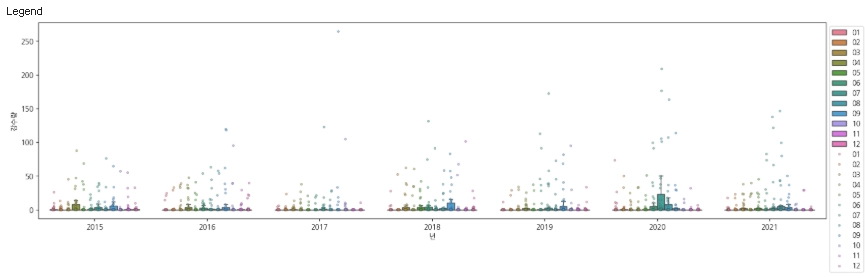
[학번별 개별 과제]
| 학번 | 문제 유형 | 추가 실습 과제 | 예상 실행 코드 |
|---|---|---|---|
| 01 | 전처리 | 강수량 결측치를 0 대신 ffill(직전 날짜 값)로 채운 후, 평균 강수량이 어떻게 변하는지 확인하기 | df_rain['강수량'].ffill() 적용 전후의 .mean() 값 차이 비교 작성 |
| 02 | 시각화 | swarmplot에서 점이 빽빽하게 겹치는 문제를 해결하기 위해 점 크기(s=2)와 투명도(alpha=0.5)를 추가 설정해 그려보기 | sns.swarmplot(..., s=2, alpha=0.5) 설정 후 기존 그래프와 가시성 비교 |
| 03 | 코드구현 | 2018년 이후 데이터에서 월별(1월~12월) 평균 강수량'을 계산하고, 막대그래프(barplot)로 시각화하기 | df_2018.groupby('월')['강수량'].mean() 후 sns.barplot() 작성 |
| 04 | 옵션확인 | 9번 boxplot + stripplot 코드에서 jitter=False로 변경해보고, 점들의 배치 모습이 어떻게 달라지는지 확인하기 | jitter=False 실행 시 점들이 일렬로 겹치는 현상 캡처 및 설명 |
| 05 | 데이터해석 | '강수량이 0인 날(비가 안 온 날)'을 제외한 실제 맑지 않은 날만의 평균 강수량과 중앙값 계산해보기 | df_rain[df_rain['강수량'] > 0]['강수량'].describe() 실행 후 결과 서술 |
| 06 | 전처리 | 강수량 결측치를 0 대신 ffill(직전 날짜 값)로 채운 후, 평균 강수량이 어떻게 변하는지 확인하기 | df_rain['강수량'].ffill() 적용 전후의 .mean() 값 차이 비교 작성 |
| 07 | 시각화 | 5번 swarmplot에서 점이 빽빽하게 겹치는 문제를 해결하기 위해 점 크기(s=2)와 투명도(alpha=0.5)를 추가 설정해 그려보기 | sns.swarmplot(..., s=2, alpha=0.5) 설정 후 기존 그래프와 가시성 비교 |
| 08 | 코드구현 | 2018년 이후 데이터에서 '월별(1월~12월) 평균 강수량'을 계산하고, 막대그래프(barplot)로 시각화하기 | df_2018.groupby('월')['강수량'].mean() 후 sns.barplot() 작성 |
| 09 | 옵션확인 | 9번 boxplot + stripplot 코드에서 jitter=False로 변경해보고, 점들의 배치 모습이 어떻게 달라지는지 확인하기 | jitter=False 실행 시 점들이 일렬로 겹치는 현상 캡처 및 설명 |
| 10 | 데이터해석 | '강수량이 0인 날(비가 안 온 날)'을 제외한 실제 맑지 않은 날만의 평균 강수량과 중앙값 계산해보기 | df_rain[df_rain['강수량'] > 0]['강수량'].describe() 실행 후 결과 서술 |
| 11 | 전처리 | 강수량 결측치를 0 대신 ffill(직전 날짜 값)로 채운 후, 평균 강수량이 어떻게 변하는지 확인하기 | df_rain['강수량'].ffill() 적용 전후의 .mean() 값 차이 비교 작성 |
| 12 | 시각화 | 5번 swarmplot에서 점이 빽빽하게 겹치는 문제를 해결하기 위해 **점 크기(s=2)와 투명도(alpha=0.5)**를 추가 설정해 그려보기 | sns.swarmplot(..., s=2, alpha=0.5) 설정 후 기존 그래프와 가시성 비교 |
| 13 | 코드구현 | 2018년 이후 데이터에서 '월별(1월~12월) 평균 강수량'을 계산하고, 막대그래프(barplot)로 시각화하기 | df_2018.groupby('월')['강수량'].mean() 후 sns.barplot() 작성 |
| 14 | 옵션확인 | 9번 boxplot + stripplot 코드에서 jitter=False로 변경해보고, 점들의 배치 모습이 어떻게 달라지는지 확인하기 | jitter=False 실행 시 점들이 일렬로 겹치는 현상 캡처 및 설명 |
| 15 | 데이터해석 | '강수량이 0인 날(비가 안 온 날)'을 제외한 실제 맑지 않은 날만의 평균 강수량과 중앙값 계산해보기 | df_rain[df_rain['강수량'] > 0]['강수량'].describe() 실행 후 결과 서술 |